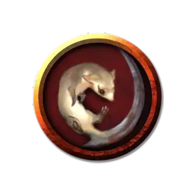

Куница химера
Chimeric Weasel
Крошечный Зверь, без мировоззрения

Класс Доспеха 13
Хиты 1 (1к4 - 1)
Скорость 30 футов
| мод | спас | ||
|---|---|---|---|
| СИЛ | 3 | −4 | −4 |
| ЛОВ | 16 | +3 | +3 |
| ТЕЛ | 8 | −1 | −1 |
| мод | спас | ||
|---|---|---|---|
| ИНТ | 2 | −4 | −4 |
| МДР | 12 | +1 | +1 |
| ХАР | 3 | −4 | −4 |
Навыки Восприятие +3, Скрытность +5
Чувства пассивное Восприятие 13
Опасность 0
Бонус мастерства +2
Особенности
Острый слух и тонкий нюх. Куница совершает с преимуществом проверки Мудрости (Восприятие), полагающиеся на слух и обоняние.
Созданная химера. Куница обладает светящимися глазами, которые излучают яркий свет в радиусе 20 футов и тусклый свет еще на 20 футов.
Действия
Укус. Рукопашная атака оружием: +5 к попаданию, досягаемость 5 футов, одна цель. Попадание: Колющий урон 1.